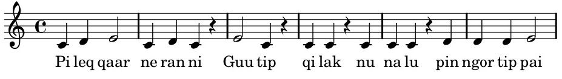
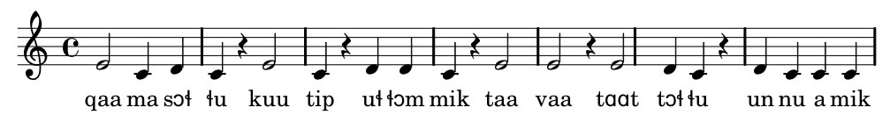
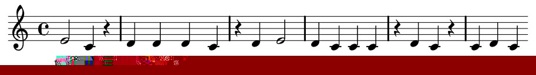

Without some kind of melody it is impossible not to get lost in the long Greenlandic words. So let us check out the tonal system. But before we can start we need to understand syllabification in Kalaallisut. That is a simple task as long as you remember that -ng- is one sound /ŋ/ and that double /ŋŋ/ is -nng- in orthography.
Syllables divide between two consonants. tut--tu, a-te-qar--pu-nga, Ma-niit--su-mu-ka-ru-suk--ka-lu-a-qaa-nga, a-jun--ngil--lu-in--nar--poq
Syllables divide before a single consonant. tut-tu, a--te--qar-pu--nga, Ma--niit-su--mu--ka--ru--suk-ka--lu-a--qaa--nga, a--jun-ngil-lu-in-nar-poq
Syllables divide between different vowels. tut-tu, a-te-qar-pu-nga, Ma-niit-su-mu-ka-ru-suk-ka-lu--a-qaa-nga, a-jun-ngil-lu--in-nar-poq
Many students have a rather fraught relation to prosodic features as pitch and stress. Often the guilt lies with the school and boring classes trying to teach the tiny differences in terminal contours in various dialects. If you are one of such students you most likely have started to yawn already but do not do it! In Kalaallisut the acquisition of the tonal system is not just a minor improvement to lift your pronunciation from a B to an A. It is crucial if you want to be understood and if you want to avoid making a fool of yourself because sloppy pronunciation will create scores of unexpected words you never meant to say.
The new feature you must learn how to cope with is the fact that words with long consonants mean something entirely different from look-alike words with short consonants. It is a popular joke to make learners pronounce ussuk which means 'bearded seal' because foreigners seldom know how to pronounce the long /s/ so that they wrongly produce usuk which means 'penis'!
And when the good student who understands where the problem lies tries to address the /s/ maybe even exaggerate its length his pronunciation will still sound like 'penis'. It is so because differences between long and short consonants are accompanied by differences in the tonal pattern and these patterns strike the ear stronger than physical length of the consonants.
Or to put it differently: A proper intonation together with unprecise consonant lenght will sound a little corny but you will be understood. Wrong intonation will be incomprehensible even when consonant length in itself is about acceptable.
And there is a wonderful bonus to it once you have acquired a feeling for the melody: You will realize that your consonant lengths magically come out right. Trust me!
There is a thing I need to stress: What I tell in this chapter is not the whole truth. Language melody is a combination of a huge amount of factors - much too huge for us to address in a primer as short as this one. What you get is an easy shortcut to the most immediately audible elements of the big picture but with that safe inside your L2 toolbox you will find yourself in a comfortable position before the next steps towards mastery of Kalaallisut. So let us jump into it:
a syllable with a short vowel and no closing consonant is uttered using your neutral voice. We call such syllables open.
a syllable with a short vowel that ends in a consonant is uttered using a tone slightly higher than neutral. In word-final position, though, one often finds a neutral tone. We call such syllables closed syllables.
a syllable with a long vowel is uttered using a tone considerably higher than neutral and higher than the pitch one finds in short closed syllables.
To illustrate the principles we will use a primitive notation. Pitch is relative so do not get led astray by the fact that we exploit the staff as we know it and use C flat as example. It is absolutely arbitrary but I trust that it illustrates my point.
Why not start right from the beginning? Here is the first sentence in Genisis: Pileqqaarneranni Guutip qilak nunalu pinngortippai ('In the beginning God created the heavens and the earth.')

Pi-leq-qaar-ne-ran-ni:
Pi neutral tone since the syllable is short and open
leq is a closed, short syllable and should therefore be uttered a little higher than Pi
qaar is very high because it is long
ne is short and open. Back to neutral
ran is short but closed so it is a little higher than ne
ni is short and word-final so it should be neutral
Guu-tip:
Guu is long and accordingly high
tip is short and word-final so it is neutral
qi-lak:
qi is neutral as it is short and open
lak is short and word-final so that too is neutral
nu-na-lu: all syllables are short and open so all syllables will be uttered using a neutral tone
pin-ngor-tip-pai:
pin short and closed. A bit above neutral. NB note that there is no /n/ in the syllable. It is pronounced [piŋ]. -nng- is nothing but an orthografical shorthand for /ŋŋ/
ngor short and closed same tone as above
tip still the same tone
pai is long so it needs a high pitch. NB: word-final -ai is not pronounced with a diphthong as English I. It is orthography for a long /a/ that closes in a little j-sound [aaj]
You now have all the tools you need to read and pronounce Kalaallisut decently. But you most likely need a little time for the many pieces of information to settle and you need a little practice, I guess.
Here you get Genesis 1.5 with all possible information included. The text is divided into syllables, you get it both as text and in a phonetic transcription and you get the broad prosodic analysis using our simple music notation. Walk through it and make sure you understand everything. If you are a brain-learner rather than an ear-learner and would want further details about this topic you might want to consult the chapter on sound system from the grammar book. You find the relevant chapter included as text on the DVD.
Qaa.ma.sor.lu Guu.tip ul.lor.mik taa.vaa, taar.tor.lu un.nu.a.mik.

Taa.va un.nun.ngor.poq ul.laan.ngor.lu.ni.lu, ul.loq si.ul.leq.

In the exercises below you will be instructed to learn the first stanza of Hans Lynge's beloved poem by heart. It will be much easier for you to do so if you can sing it out so listen carefully when I sing it for you and try to join me a little later. After a few attempts you should be comfortable on your own.
Here is the text from Genesis 1.6 and 1.7. Hyphenate it and isolate the 11 syllables that will be pronounced with the highest tone:
Guutilu oqarpoq: Isuissimasoq pinngorli ermit akornanni, ermit avissaarteqqullugit. Guutip taava isuissimasoq piliaraa, avissaartillugit ermit isuissimasup ataaniittut ermillu isuissimasup qulaaniittut; taamalu ilivoq
Here are the names of the municipalities in Greenland before they were united into the present 4 municipalities in 2009. Hyphenate all names and assign a zero to all short open syllables, assign 1 to all short closed syllables, and assign 2 to all long syllables:
Nanortalik, Qaqortoq, Narsaq, Ivittuut, Paamiut, Nuuk, Maniitsoq, Sisimiut, Kangaatsiaq, Aasiaat, Qasigiannguit, Ilulissat, Qeqertarsuaq, Uummannaq, Upernavik, Avanersuaq, Tasiilaq, Ittoqqortoormiit
Per Langgård
mail@learngreenlandic.com
Kanalvej 110, DK-5000 Odense C
+45 2065 5179